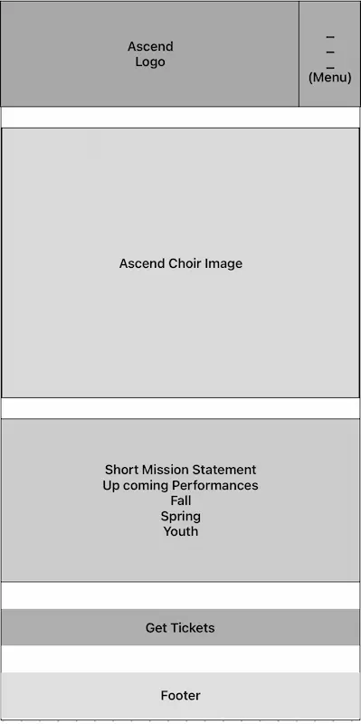
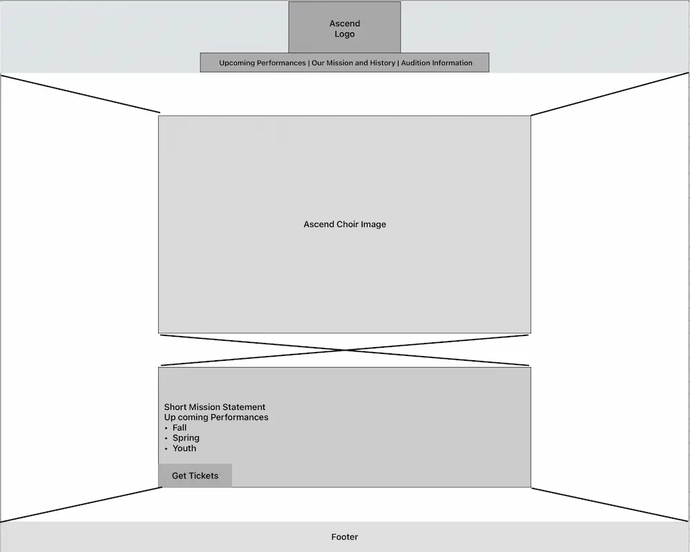

Purpose:
To inform the public about the Ascend Orchestra and Choir, provide upcoming performance schedules, sell tickets, share its short history and interfaith mission, and recruit musicians.
Target Scenarios:
1. When are the upcoming performances, and how do I get tickets?
2. What is the Ascend Orchestra and Choir, and what is its interfaith mission?
3. How can I audition or join the ensemble?
Color Schema
#be3119 (Unnamed shade of Red): Main color
#fbe493 (Unnamed shade of Yellow): Secondary color
#F5F5F5 (WhiteSmoke): Background: color
#3a3131 (Unnamed shade of Black): Text color
#FFFFF0 (Ivory): Heading text color
Typography
Playfair: For headings
Teachers: For body paragraph content

